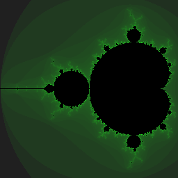

Lab 1: SIMD Mandelbrot
Prologue: Logistics
Lab Structure + Schedule
Welcome to 6.S894: Accelerated Computing! This is the first of a series of weekly lab assignments which you’ll be completing throughout the course. These labs are designed to give you hands-on experience designing, implementing, and analyzing high-performance programs for modern throughput-oriented computing hardware. Concretely, we’ll mostly be focusing on GPUs and CUDA (although these first two weeks will also involve writing some code for x86 CPUs).
Each lab will operate according to the following structure:
-
Prior Week – Release
Lab instructions and starter code are released on the course website. -
Monday – Checkpoint Due
You turn in a low-stakes “lab checkpoint,” designed to get you started on the lab and to prepare for the live lab discussion on Tuesday. -
Tuesday – Live Lab Session
The whole class gathers for a 2-hour in-person session to discuss the week’s lab, help answer each others’ questions, and collectively investigate different optimization strategies and performance puzzles. -
Friday – Final Submission Due
You turn in your final submission for the lab, usually containing a few code files and a brief write-up formatted as a PDF.
For the lab checkpoint and final submission, you’ll be submitting your materials through Gradescope. You will be added to the Gradescope after the course lottery has occurred.
Getting the Starter Code
You can get the starter code by cloning the lab repository:
Setting up Telerun
To run all the code we write in this course, we’ll be using Telerun, a system we built to allow students to compile and run code on remote machines.
Telerun is a system for running single C++/CUDA source files on remote machines and getting the output of their execution. Telerun provides a submit command which automatically handles:
-
Uploading your source file to the remote server.
-
Compiling your source file with the correct options for the appropriate hardware target.
-
Executing your compiled program on a machine with the appropriate resources (e.g. a GPU).
-
Downloading the output of your program to your local computer.
In order to use Telerun, the only thing you need to have installed on your computer (other than Telerun itself) is a Python interpreter.
Before you start this lab, you should download and log in to Telerun using the instructions provided here:
>>> Telerun Setup Instructions <<<
Like the rest of this course, Telerun is brand-new and experimental – it will have bugs! If you have any trouble setting up or using Telerun, please contact course staff on Piazza.
You will be provided with a Telerun authentication token after the course lottery has occurred. We may also make small updates to the Telerun client in the coming days, so keep your eyes out for any instructions on Piazza.
Introduction
Goals for This Lab
One of the most fundamental concepts which we’ll be repeatedly returning to throughout this course is parallelism. Methods of exploiting parallelism can take a variety of different forms at the hardware level, and can be exposed in a variety of different ways at the software level. In Lab 1 (this lab) and Lab 2 (to be released next week), we’ll be looking at:
-
The different fundamental levels of parallelism which exist in modern CPUs and GPUs: vector parallelism, instruction-level parallelism, multi-threaded parallelism, and multi-core parallelism.
-
How the different types of parallelism which exist on GPUs correspond to analogous (and perhaps more familiar) types of parallelism which exist on CPUs.
Although GPUs and CPUs can look quite different at first, we hope that these labs will help you understand these different hardware platforms in terms of their deep similarities. As we’ll see, modern CPUs and GPUs have actually converged towards using many of the same architectural features for efficiently processing throughput-oriented workloads, although they choose to expose these features to the programmer in different ways.
To explore the various types of parallelism we’re interested in, we’ll be building up a series of different approaches to computing visualizations of the Mandelbrot fractal on CPUs and GPUs. That means you’ll be writing C++ and CUDA code to generate pictures that look like this:

For this week specifically (Lab 1), we’ll be looking at two ways of rendering Mandelbrot fractals:
-
Sequential scalar code, with no explicit parallelism at all.
-
Vector-parallel code, using a “Single Instruction, Multiple Data” (SIMD) execution model.
We’ll look at what implementing each of these strategies looks like on both CPUs and GPUs. Along the way, we’ll be teaching you a tiny bit of CUDA (you’re not expected to have ever used CUDA before).
For the lab checkpoint, the only thing we’ll ask you to turn in is a brief summary of how much progress you’ve made (especially on setting up Telerun), and anything you’re stuck on. For the final submission, you’ll be turning in a scalar implementation of Mandelbrot in CUDA, and vector-parallel implementations of Mandelbrot for CPU and GPU. More information on what you’ll be turning in can be found in the “Deliverables” section at the bottom of this page.
Part 1: Scalar Mandelbrot
CPU: Reference Implementation (Already Written)
In this lab, we’ll be studying ways to parallelize the following computation:
void
This code populates a two-dimensional buffer of integers which can be used to visualize the Mandelbrot fractal, if the integers are converted to colors (for this reason, we’ll call each individual element of the out buffer a “pixel”). You can try running this code with:
to measure its run time and see what kind of images it produces (look in ./telerun-out).
There are many interesting things which can be said about the mathematics of the Mandelbrot fractal and algorithms for computing it, but for the purposes of this lab, we’re not concerned with where this algorithm came from or how to intuitively interpret what it’s doing.
Instead, we’re concerned with the properties of this Mandelbrot workload from a performance engineering perspective; we just want to make it run fast. From that perspective, some of the most important properties of this workload are:
-
Every pixel is independent:
The work done at each pixel locationi, jdoesn’t depend on the work done for any other values ofiorj. -
There are a lot of pixels:
For typical image sizes, we’ll need to compute tens of thousands of different pixels. -
Computation dominates:
Because we only need to access main memory once per pixel (to write to theoutbuffer), we can expect most of the run time to be spent doing math in the inner loop. -
Different pixels need different amounts of work:
The innerwhileloop terminates after an unpredictable number of iterations, which might be different for different pixels.
The sample code above implements this algorithm entirely sequentially, processing one pixel at a time. However, from properties 1 and 2, we can see that there’s a lot of potential for exploiting parallelism in this workload by processing multiple pixels simultaneously. (In fact, problems like this are sometimes called “embarrassingly parallel.”)
In Part 2, we’ll be looking at one way to introduce parallelism into this program, using vector instructions. But first, we’ll dip a toe into GPU programming by writing a CUDA version of this sequential implementation.
GPU: Your Implementation
As a first exercise in CUDA, we’ll write a direct translation of the sequential CPU algorithm given above for generating Mandelbrot fractals. Even though this version will run on the GPU, it will use no parallelism at all.
For context, we’ll first note a few basic facts about CUDA:
-
CUDA is a dialect of C++ that supports running code on the GPU. Most features of C++ are supported in CUDA GPU code, and use the same syntax as they do in regular C++ on your CPU. (Reference)
-
CUDA is written in
.cufiles, which can contain a mix of code which runs on the GPU and code which runs on the CPU. The parts of the code in a.cufile which run on the CPU are written in ordinary C++, plus a few extensions that let it interact with the GPU. (Reference) -
Pointers in CUDA can point to either CPU or GPU memory. You can’t know solely based on a pointer variable’s type whether it points to CPU or GPU memory; you also need to know where the pointer came from. It is safe for CPU code to hold pointers to GPU memory; but if CPU code tries to load or store through a pointer to GPU memory, or vice-versa, it will crash the program. (Reference)
-
The
__global__keyword marks a function as running on the GPU. Specifically,__global__declares a “CUDA kernel,” which is a function which runs on the GPU but which can be “launched” from the CPU. (Reference) -
CPU code can launch CUDA kernels using the special syntax
kernel_name<<<N, M>>>(arg_1, ..., arg_n)
whereNandMare integers which control parallelism,kernel_nameis a function declared with the__global__keyword, andarg_1, ..., arg_nare arguments passed to the kernel. (Reference)
In mandelbrot_gpu.cu, you’ll first find two functions to be implemented:
__global__ void
void
Because the function mandelbrot_gpu_scalar is marked __global__, the CUDA compiler will compile it to run on the GPU.
The testing + benchmark harness provided with the lab code will not launch mandelbrot_gpu_scalar directly; instead, the provided lab code will call the CPU function launch_mandelbrot_gpu_scalar, passing it a pointer to a GPU memory buffer to be populated by a CUDA kernel. It is then the responsibility of the launch_mandelbrot_gpu_scalar function to actually launch the kernel that will fill that buffer.
To implement the scalar Mandelbrot CUDA kernel, you can follow these steps:
-
Copy the code from
mandelbrot_cpu_scalarinto the body ofmandelbrot_gpu_scalar -
Add the line
mandelbrot_gpu_scalar<<<1, 1>>>(img_size, max_iters, out);
in the body oflaunch_mandelbrot_gpu_scalar. This will launch the kernel with no parallelism; it will run on the GPU as if it were a single-threaded CPU program.
If this seems straightforward, that’s because it is! This step in the lab is only meant to start getting you familiar with some of the basic elements of CUDA.
Once you’ve filled in the scalar CUDA implementation, you can run it with:
Question 1 for final write-up: How does the run time of the scalar GPU implementation compare to the scalar CPU implementation? What factors do you think might contribute to each of their run times?
Part 2: Vector-Parallel Mandelbrot
Now it’s time to start exploiting some of the parallelism available in the Mandelbrot workload. There are many different types of parallel execution exposed in both CPUs and GPUs that we might try to apply to this problem, but for Lab 1 we’ll be focusing on vector parallelism, also known as “Single Instruction, Multiple Data” (SIMD) parallelism. We’ll start with a vectorized CPU implementation, and then see how the same principles of SIMD execution also show up in GPUs (albeit exposed to programmers in a very different way).
CPU: SIMD Programming Model + SIMD Execution
For our vectorized CPU implementation, we’ll be targeting x86 with AVX-512 extensions. For 32-bit integer and float types, the vectors provided by AVX-512 are 512 / 32 = 16 elements wide. As a result, the strategy we recommend for vectorizing the Mandelbrot workload is to generate one contiguous 16-wide row of pixels at a time, as depicted in the following:
Your task is to implement the mandelbrot_cpu_vector function in mandelbrot_cpu.cpp using explicit vector operations through the AVX-512 intrinsics. You can assume that the img_width is always evenly divisible by 16.
Things you might want to consider include:
-
Think about what needs to happen to the structure of the outer loops.
-
Think about how you’re going to fill vectors with the right
cxandcyvalues for a given row of 16 pixels. -
Think about how you’re going to handle control flow. How do you deal with the fact that different pixels have different numbers of inner loop iterations?
Some very useful intrinsics you might want to use for this program are:
| Intrinsic | Meaning |
|---|---|
_mm512_set1_ps(float a) | Sets all 16 words of a vector to the same fp value a |
_mm512_set1_epi32(int a) | Sets all 16 words of a vector to the same int value a |
_mm512_set_ps(e15, e14, ..., e0) | Set 16 words of a vector with 16 values in backwards order |
_mm512_add_ps(...) | Add two fp vectors element-wise |
_mm512_sub_ps(...) | Subtract fp vectors element-wise |
_mm512_mul_ps(...) | Multiply fp two vectors element-wise |
_mm512_cmp_ps_mask(...) | Generate mask based on the element-wise comparison of two fp vectors |
_mm512_mask_add_epi32(...) | Add two int vectors element-wise according to the mask (more info) |
_mm512_storeu_si512(...) | Write all 16 words of a vector contiguously into memory at a given address |
Don’t worry too much if you get stuck at first – we’ll have a chance during live lab to help each other figure out how to get un-stuck.
You can test your mandelbrot_cpu_vector code by running mandelbrot_cpu.cpp as you did earlier:
Question 2 for final write-up: How did you initialize
cxandcy? How did you handle differences in the number of inner loop iterations between pixels in the same vector? How does the performance of your vectorized implementation compare to the scalar versions?
GPU: SPMD Programming Model + SIMD Execution
What we just did was painful. The CPU scalar version of Mandelbrot was much easier to read and write than the vector version.
CUDA is designed to let you write code which looks like the scalar version, but which executes on SIMD hardware like the vector version, with the performance advantage that entails.
Earlier, when we wrote the GPU scalar version of Mandelbrot, we set both of the launch parameters which control the parallelism of the mandelbrot_gpu_scalar kernel to 1:
mandelbrot_gpu_scalar<<<1, 1>>>;
Setting those parameters to 1, 1 caused the kernel to run without any parallelism. By setting those parameters to higher values, we can unlock several different kinds of parallelism. We’ll cover all of them over the next two weeks, but for now we’ll show how to set them, and update our kernel, to exploit SIMD parallelism.
We can think of these parameters as specifying the size of an iteration space over which the kernel will be instantiated. This is often called a “Single Program Multiple Data” (SPMD) programming model.
NVIDIA’s GPU hardware natively executes all instructions on 32-wide vectors, and if we set the inner dimension of the iteration space to a value ≤32, all instances of our kernel will be running in different lanes of a single SIMD vector. In fact, even our GPU “scalar” version was secretly executing on just one lane of a 32-wide vector!
Our final goal for this lab is to implement a vector-parallel Mandelbrot on the GPU, directly analogous to the vector-parallel version we wrote for CPU. To do this, we need to implement two functions:
__global__ void
void
As before, launch_mandelbrot_gpu_vector should launch mandelbrot_gpu_vector, but this time using the dimensions <<<1, 32>>>.
When we do that, the code inside mandelbrot_gpu_vector will run not once, but 32 times in parallel. From the perspective of the hardware, each of the 32 copies is executed on a different lane of a single SIMD vector. But if each copy is running the same code, how do they ever compute different values? In the same way that for the CPU vector implementation you had to initialize different lanes of your vectors with different data in order to get them to generate different pixels, we need a way for each instance of the kernel to know what pixel it’s supposed to compute.
For our launch configuration, CUDA exposes the index of each kernel instance in a special integer variable called threadIdx.x. In the first lane of the implicit SIMD vector this will have the value 0, in the second it will have value 1, and so on.
Using that, your next job is to implement mandelbrot_gpu_vector so that it computes 32-wide rows of pixels at a time when launched by launch_mandelbrot_gpu_vector. Don’t worry if the control flow is different across different instances of your kernel. Even though it executes in SIMD style, the hardware knows how to ensure that your program executes as if every instance were running independently.
As before, you can run your GPU code with Telerun:
Question 3 for final write-up: How does the performance of your vectorized implementation compare to the scalar versions? Given how you implemented the vector-parallel CPU version with explicit SIMD, how do you think the GPU executes multiple kernel instances that run different numbers of iterations?
Deliverables
Checkpoint (Due Monday September 8, 11:59pm)
For this week, you do not need to submit any code for the initial checkpoint, but you should have made some effort to install and use Telerun, and to implement the first two functions we ask you to implement (GPU scalar and CPU vector).
On the Gradescope assignment “Lab 1 Checkpoint,” submit brief answers to the three prompts checking in about how you’re doing with the lab.
Final (Due Friday, September 12, 11:59pm)
On the Gradescope assignment “Lab 1 Final,” submit your completed code (mandelbrot_cpu.cpp and mandelbrot_gpu.cu), as well as a short PDF writeup containing your answers to Questions 1-3 above, as well as (optionally) anything else you’d like to highlight.
For this lab, your code will be graded primarily on correctness. (Future labs will focus more on optimizing code to reach performance thresholds.)
Submission Details
You will be added to Gradescope / Telerun after the course lottery on Friday.
In terms of submission, please make sure your final submission prints out the same logs as the starter code, otherwise the autograder may not work correctly. The autograder will hide your grade, so please do not spam the autograder. Instead, use Telerun from your local machine.